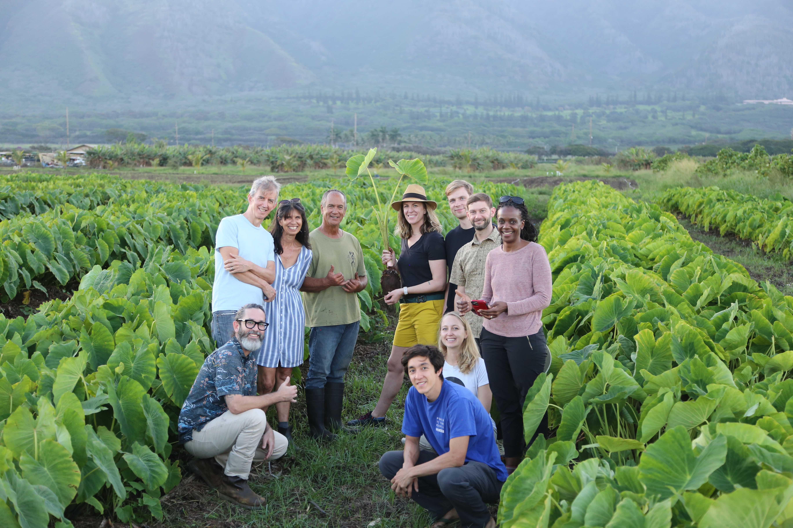

NASA Acres AI/Machine Learning
NASA Acres is NASA's US agriculture and food security consortium. Its artificial intelligence (AI) / machine learning team aims to:
- Conduct fundamental machine learning research motivated by applications of remote sensing data
- Enable and advance the adoption of ML methods using remote sensing data to benefit food security and agriculture
Projects
Maui County Food Security Data Visualization Project

The primary goal of this project is to create more equitable access to food in Maui County by helping to increase food production in a way that is both adaptive to the changing climate and regenerative to the land. You can read more about this project
here.